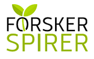

Talentudvikling på Rys
For dig med ambitioner
For dig med ambitioner
 Science Talenter
Science TalenterI løbet af de tre dage (to overnatninger) bliver du udfordret inden for forskellige faglige science-emner.
Du kommer til at arbejde i laboratorie, nørde med teknologi og bruge både dine matematiske og kreative evner. Og måske vil du
også føle dig udfordret, når vi beder dig præsentere, hvad I har arbejdet med i din gruppe. Når du er på camp hos Science Talenter,
får du styrket både dine faglige og studiemæssige kompetencer. Men du får med garanti også mulighed for at opdyrke et fedt netværk
med andre unge, som synes science er sjovt!
Der er forskellige typer programmer:
Alle programmerne der er listet ovenorver er fordelt ud over tre camps i løbet af 2.g. Der bliver også lavet enkeltstående camps for alle årgange, hvor de blot varer en weekend.

ATU-programmet er et bredt 2-årigt diplomprogram til de dygtigste elever i gymnasiet. Vi tilbyder talenterne forelæsninger
på universitetsniveau samt workshops med forskere og topchefer inden for et bredt fagligt felt.
Programmet består af:
Undervisningen foregår efter skole sammen med hundredvis af videbegærlige og skarpe unge hjerner og hjerter. I alt 100
obligatoriske timer inkl. en camp samt mulighed for at vælge en lang række enkeltstående oplæg i vores valgfrie program.

Talent er en særlig kompetencer, der bygger på både medfødte og erhvervede evner og på lyst og vilje til at udvikle og udnytte sit potentiale
Projekt Forskerspirer er en konkurrence, der løber over et år. I slutningen af oktober afleverer forskerspirerne en synopsis til et forskningsprojekt.
En dommerkomité udvælger de tre bedste projekter inden for hver af kategorierne:
HUM, NAT, SAMF og SUND.
De 12 nominerede projekter præsenteres ved en festlighed i december. Her bliver en vinder i hver af de fire kategorier kåret som årets forskerspire. Vinderne kåres på skift af undervisnings- og uddannelsesministeren, og de modtager hver 20.000 kr. til at udføre deres projekt.
